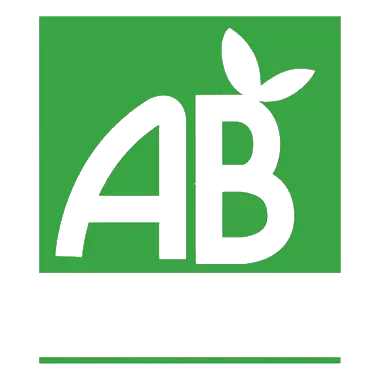
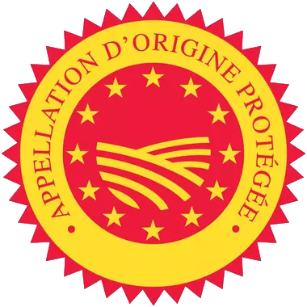
 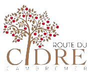
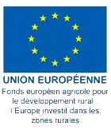
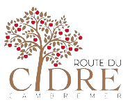
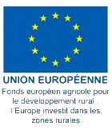
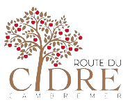
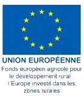
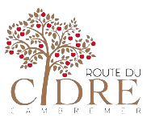
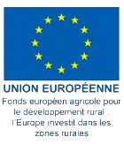
4.7⭐ / 5⭐ et 21 avis clients :
⭐⭐⭐⭐⭐
Rémi Duhautoy
Un accueil très chaleureux sur la route du cidre. Jus de pomme que nos filles adorent
⭐⭐⭐⭐⭐
Souhila M
La ferme a été reprise par deux adorables femmes. La qualité des produits est top !
⭐⭐⭐⭐⭐
Yve Scordi
Le meilleur, le meilleur, le meilleur cidre du coin.
⭐⭐⭐⭐🌑
Serge-Henri Saint-Michel
Je trouve que la pomme est trop loin derrière. Un bon cidre typé
⭐⭐⭐⭐⭐
Jérome Maintier
Le cidre est absolument fabuleux. Je l'ai découvert à un très bon restaurant de Cabourg.
⭐⭐⭐⭐⭐
Pascal Varin
Ferme bio. Très bon produits jus de pommes pour les jeunes et moins jeunes.
⭐⭐⭐⭐⭐
Nicolas Creusy
Excellent contact avec les propriétaires ! Qui plus est l'endroit est magnifique.
⭐⭐⭐⭐⭐
Sophie Janichon
Nous avons passé un agréable moment en famille dans un cadre somptueux.
⭐⭐⭐⭐⭐
Michaël Ameye
Des artisans passionnés et passionnants au franc parler. D'excellents produits bios.
⭐⭐⭐⭐🌑
Eric V.
Cidre et calvados bio. Appeler avant de visiter pour connaître les horaires.
⭐⭐⭐⭐⭐
Sandrine Larose Dale
Très bon cidre et jus de pommes
⭐⭐⭐⭐⭐
Marie Laure Renard
Trop accueillant
⭐⭐⭐⭐⭐
Cinnamon Cooper
Le meilleur Calvados que nous ayons eu dans la région.
⭐⭐⭐⭐⭐
Katrien Swennen
Petite plantation bio avec des produits délicieux et honnêtes.
⭐⭐⭐⭐⭐
Assel Bizhanova
Des prix très agréables pour le calvados et la qualité est très élevée.
⭐⭐⭐⭐⭐
Fatiha Nieto
⭐⭐⭐⭐⭐
Luc Gillibert
⭐🌑🌑🌑🌑
Nadine Goux
⭐⭐⭐⭐⭐
Nakano yu
⭐⭐⭐⭐⭐
Ilario Angonese
Vente uniquement à la ferme
C’est sur la route du cidre, dans le pays d’Auge, que se situe cette ferme typique à colombage, du 17ème siècle. Nos arrière-grands-parents, René et Hélène Turmel, y travaillèrent de 1948 à 1960 et lorsqu’ils partirent à la retraite, leur fils Robert et son épouse Denise leur succédèrent. Jusque dans les années 70, l’activité est partagée entre la production laitière et cidricole. Avec la naissance de la route du cidre, la ferme se spécialise dans le domaine cidricole. Elle compte aujourd’hui 7 hectares de vergers hautes tiges, environ 600 pommiers de 20 variétés différentes, en majorité des variétés locales du Pays d’Auge. En 1995, notre grand-père Robert Turmel cède sa place à Luc Bignon, son gendre. Ce dernier engage dès 1997 la conversion en Agriculture Biologique, pratique alors peu répandue à l’époque. Pendant toute sa carrière, Luc s’est attaché à élaborer des produits de qualité tout en laissant la nature maîtresse. A partir de 2019, nous avons préparé la transmission de la ferme : chacune a suivi une formation spécialisée en production cidricole, Éloïse après des études agricoles, Estelle en reconversion d’un début de carrière dans l’industrie laitière. C’est ainsi que depuis le mois d’avril 2022, nous avons le plaisir de vous accueillir à la ferme du bout du chemin et de vous présenter nos cidres, notre pommeau, nos calvados et notre jus de pomme.
Date/date/date
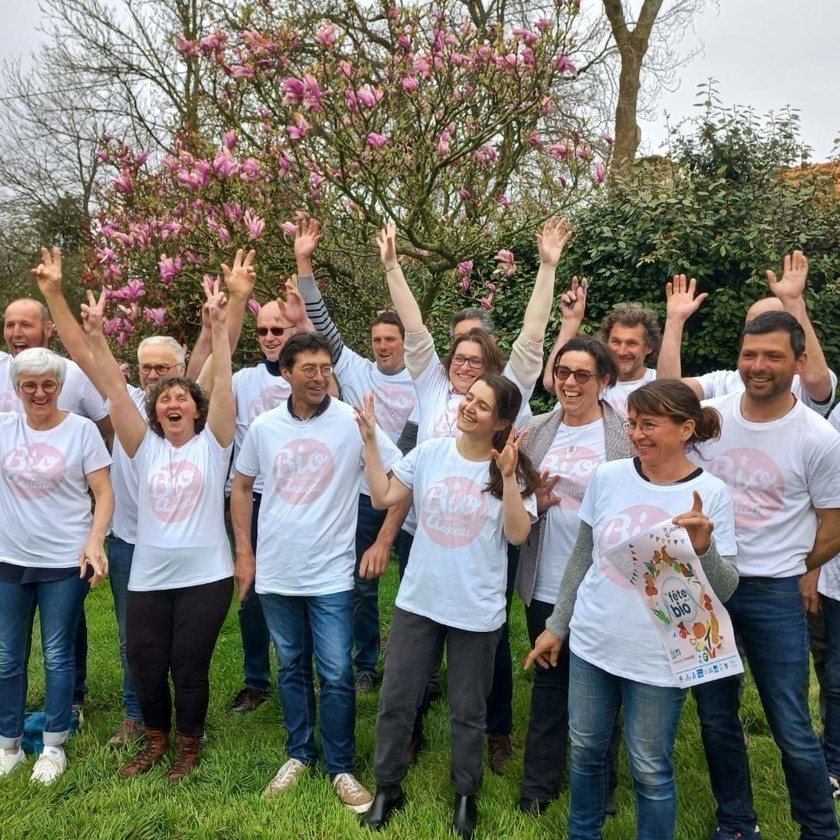Médaille d’Or : pour notre pommeau, dans la catégorie Pommeau + de 2 ans. Médaille d’argent : pour notre Calvados très vieille réserve 25 ans d’âge, dans la catégorie Calvados AOC 13 ans et plus